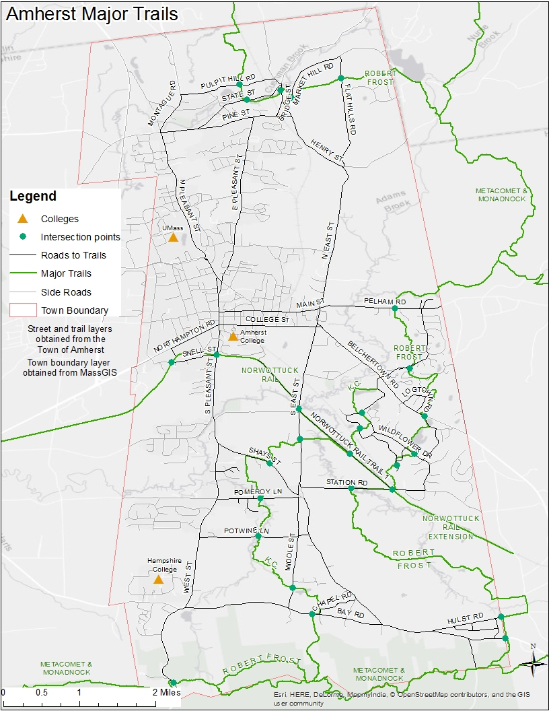
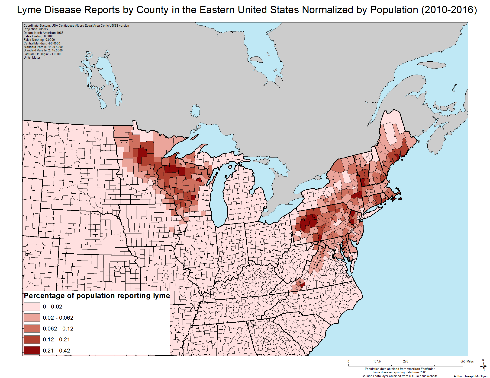
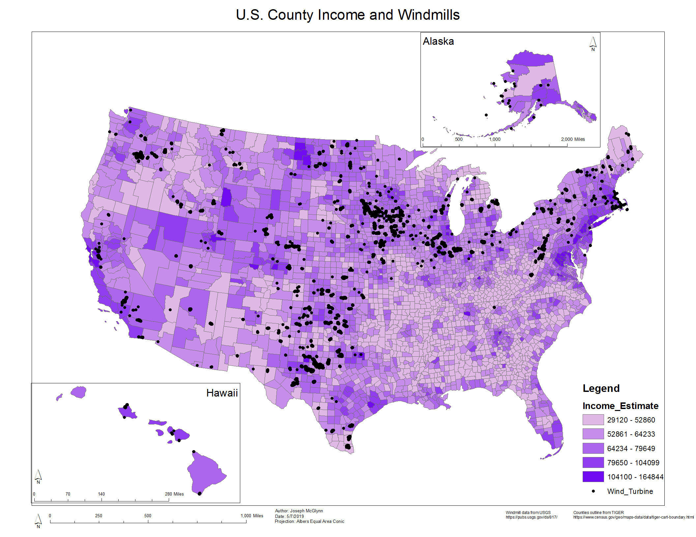
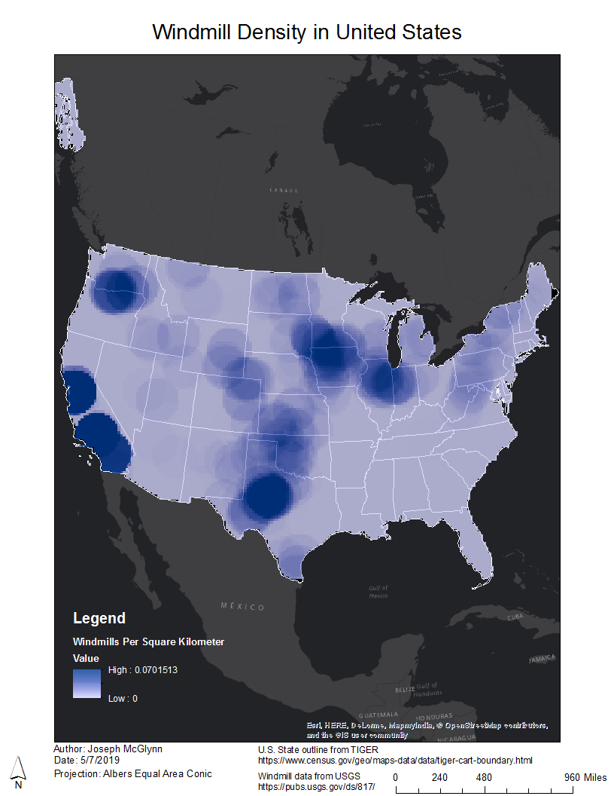
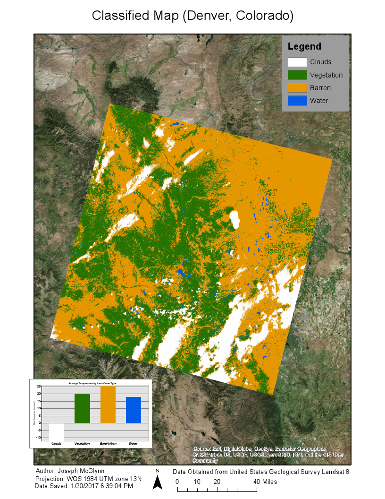
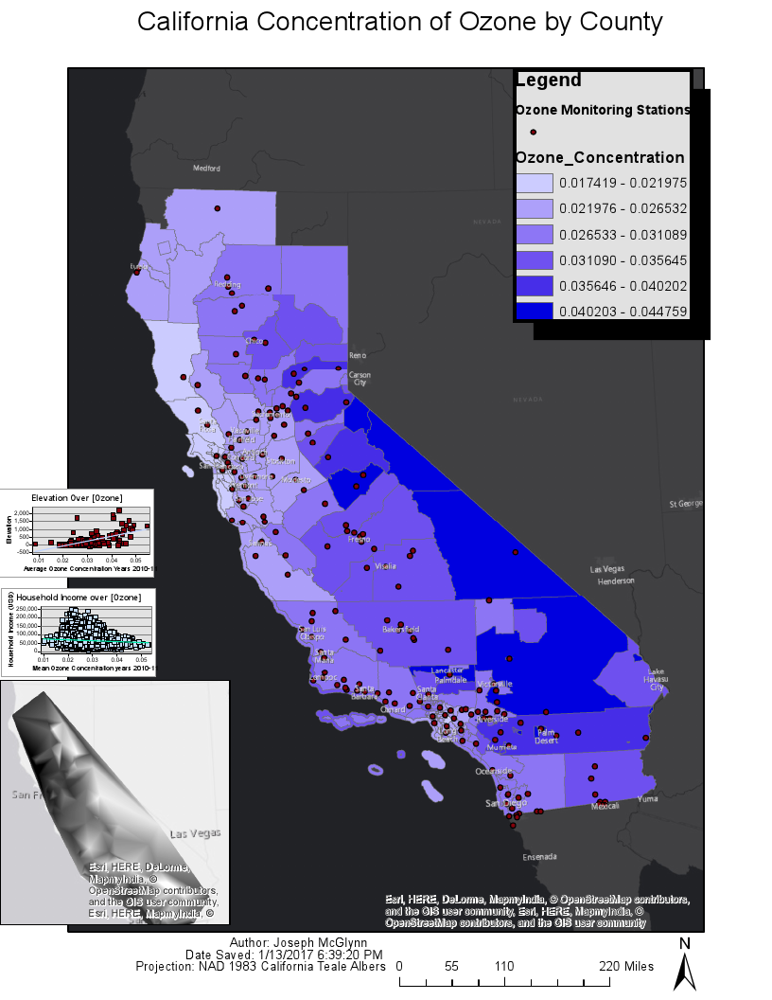
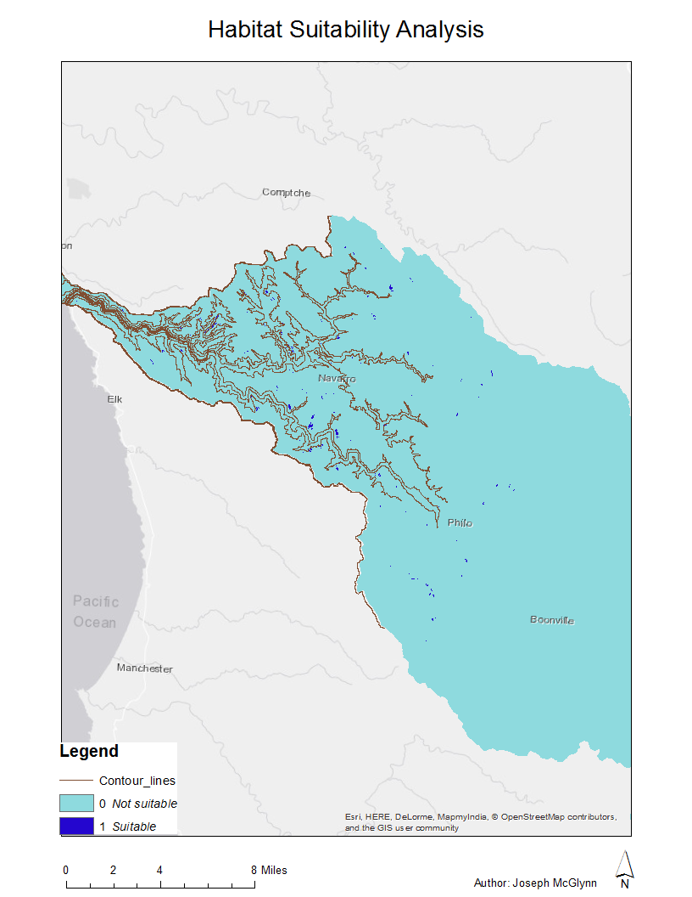
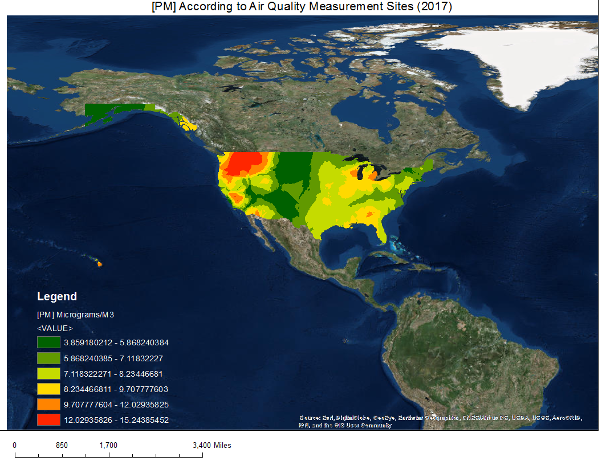

10 Pheasant Hill Road | Weston, CT, 06883 | (203) 963-9525 | josephmcglynn96@gmail.com
In Situ Water Sample Web Map
When I was doing my thesis work, one of the most time consuming tasks was attempting to find where and when water samples overlapped with satellite coverage. Being able to quickly filter sample points by date helps with this, since I can then visually assess whether or not those points overlap with satellite images. The above Web Map--made with a custom MapBox style--does exactly this. Originally I had a field to enter a date as text, but later I decided that incorporating dropdown menus would be more convenient. Just select the desired day, month, and year, and click "Filter", and the Web Map will filter out any in situ samples that did not occur on that date.
Town of Amherst Urban Reforestation Story Map
In 2018, I took a job working for the town of Amherst, MA, helping plant and take care of trees. My first story map (which I made for a WebGIS course at UMass) is simple but nonetheless takes advantage of the flexible nature of the medium to show the progress of the town's Urban Reforestation Program.
Click here to check out the story map

I made this map for a cartography course at the University of Massachusetts Amherst. Since I love hiking, I decided to make a map showing the location of the major hiking trails in the Town of Amherst, relative to the location of the colleges in the area. I emphasized major roads that lead to trails with the intention of helping anyone who wanted to navigate to a trail nearby.

I made this map for a cartography course at the University of Massachusetts Amherst. Lyme disease is very prevalent in the Northeast, so I decided to try to make a chloropleth map showing the density of lyme disease reports by county. It was fun to edit the county and state outlines so that both would be distinguishable.

I made this map for the last course in a five-course online GIS specialization. From the project summary:
"One major concern of environmental justice advocates is that industrial facilities, such as factories, are often built in economically disadvantages areas, resulting in greater exposure to toxic byproducts that may pollute air or water. There may be many incentives to build in such areas; for example, it may reduce money paid for property taxes, or it may be that a project is less likely to encounter organized resistance. Although fossil-fuel based power is associated with a lot of the harm to disadvantaged communities, alternative energy forms are not guaranteed to be implemented in a socially just manner either. Wind energy is an example of an alternative energy form that can have deleterious effects on those living nearby."
Therefore, my project used open source data to determine whether low-income communities are at greater risk suffering health affects associated with being too close to wind turbines. The map above shows windmills along with counties shaded by income. Since the points are a bit cluttered in the above map, I made a cleaner windmill density map to go along with this map (see below)

This map shows the density of windmills in the conterminous United States. This was made for the same project as the map above, and I think it shows the density of windmills more cleanly. However, it does not have county income information.

The map above was produced for the fourth course in a five-course online GIS specialization. A requirement of the assignment was to use classification, so I performed a supervised classification of land cover types in the study area (Denver, CO). I created a land surface temperature raster from landsat 8 data layers in order to classify each surface.

The map above was produced for the third course in a five-course online GIS specialization. Because of project requirements, I had to put a lot of information on the map without much explanation. Essentially, the project involved investigating correlation between household income/elevation and ozone concentration. Data had to be extracted from a point layer containing data from monitoring stations, while elevation was determined with a DEM. The bottom left map is a TIN whose z values represent ozone concentration.

The map above was produced for the third course in a five-course online GIS specialization. A habitat suitability analysis was performed taking into account elevation, land cover, distance from the water, slope, and aspect. Dark blue areas are are those that met all the criteria for suitable habitat.
Detection and Forecasting of Harmful Algal Blooms
- My thesis paper, mostly focused on optimizing the NOAA's ensemble method for detecting blooms of K. brevis with MODIS.

Remote Sensing Methods for Identifying Invasive Plants
- Written for the class "Readings in GIS" at the University of Massachusetts Amherst, this paper discusses satellite detection of invasive plants, particularly kudzu. The role of hyperspectral imagery is included.
Relationship between Particulate Matter and Neurodegenerative Diseases
- Written for the class "Pollution and the Environment" at Hampshire College.

Threats to the Canadian Boreal Forest
- Written for the class "Forests in Transition" at Hampshire College, based off of research into the state of the Northern Boreal Forest. Makes mention of the effects of climate change and the epidemic of emerald ash borers.

WaveLand Command Line Level Editor
WaveLand is one of my favorite video games. One cool feature in the game is the level editor, which has been used to create some very innovative levels. These levels can be saved as files, which contain hexadecimal values organized in a tabular fashion. Since the files were in a readable format, it occurred to me that I might be able to create levels by editing the files directly, circumventing the in-game level editor.
I started small, with one empty level. I then made another level that had a small block of collision in the upper left, then a third where that block was slightly to the right, then one where it was moved slightly down, and so on. I then compared the differences between these files in a hex editor, and in so doing was able to divine a pattern behind how changes in collision placement correspond to hexadecimal values. Essentially, each time 1 block of collision is added, two bytes which would normally read as 00 00 are instead changed to F0 F3 (a change which results in a double precision number changing from 0 to 1, but that's not necessary to know). The location in the file where this change occurs is what dictates the position of the collision. What I found was that, in order to move a block of collision down 1 cell, the bytes F0 F3 would have to occur 12 bytes later in the file. To transpose collision 2 spaces down, therefore, would mean that the bytes F0 3F will occur 24 bytes later in the file, and so on. Changing a collision block's x value is essentially the same procedure. To traspose a block 1 cell to the right, one must edit the file such that F0 3F occurs 1548 bytes later. The x values 0-2 do not seem to follow this pattern, so I had to make exceptions for them, but otherwise things were fairly straightforward.
See below for an example of how changes in collision correspond to changes in level files. The highlighted portion of each file is different, signifying that the level below has additional collision.

Short Stories
I have always been a relatively strong writer, and enjoy writing fiction. I will link a couple of my stories below.
Impossible
- A story with a fairy
Red Bird
- A story with a bird